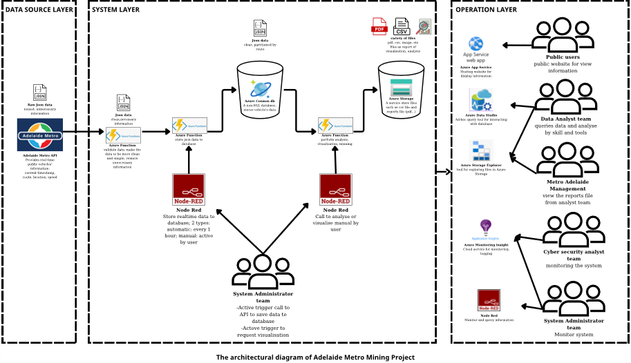
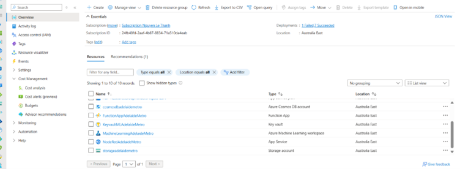
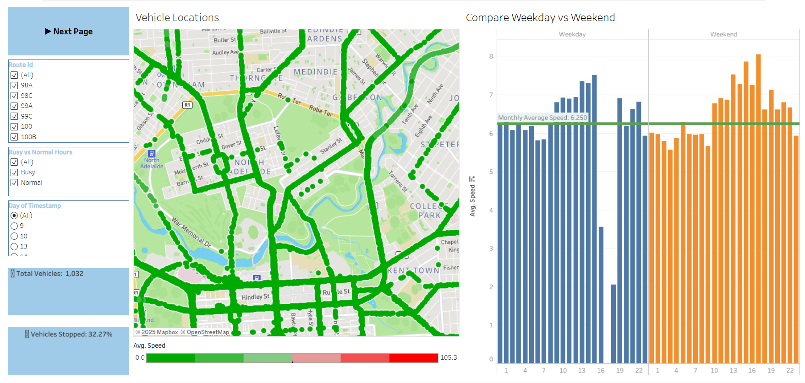
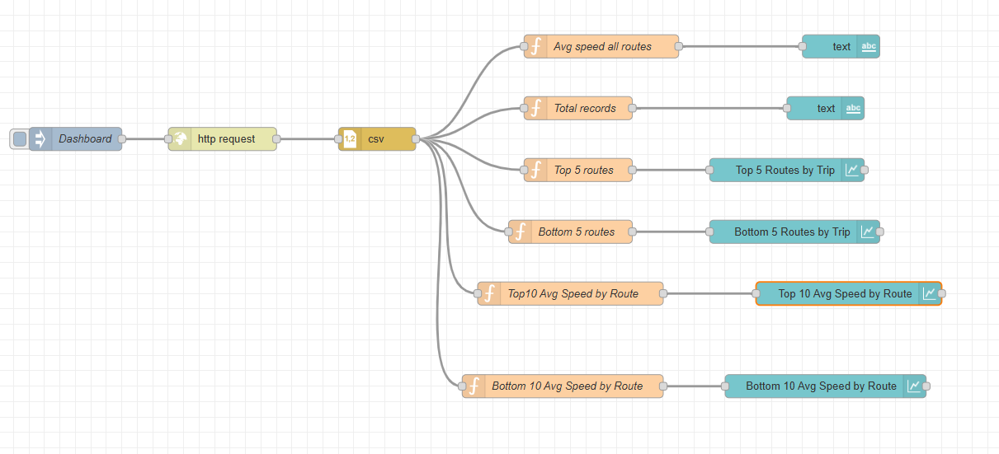
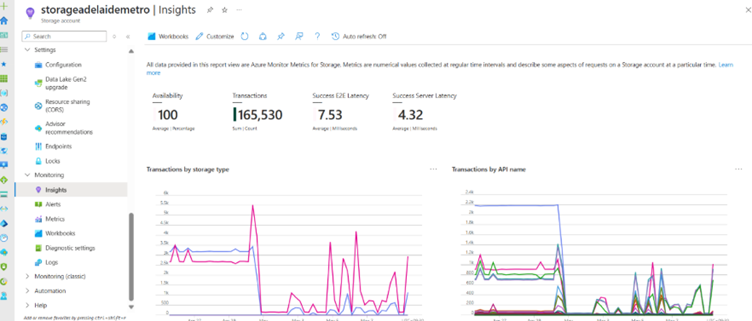
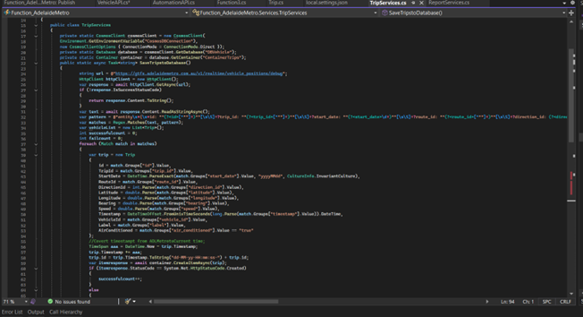

Adelaide Metro Real-Time Data Mining Platform
Cloud Computing Project — A cloud-based data pipeline to collect, process, store, and analyse real-time public transport data from the Adelaide Metro API. Integrates Microsoft Azure and Node-RED for data ingestion, monitoring, reporting, and visualization.
Context: Cloud and Distributed Computing course, Flinders University

Description
This project was developed as part of a Cloud and Distributed Computing course at Flinders University. The system designs and implements a cloud-based data pipeline to collect, process, store, and analyse real-time public transport data from the Adelaide Metro API.
The solution integrates Microsoft Azure cloud services and Node-RED to automate data ingestion, monitoring, reporting, and visualization, allowing stakeholders to track vehicle locations and analyse transport operations in real time.

Figure 1: System architecture overview
Key Features
- Designed a cloud-based architecture to collect and process real-time vehicle data from the Adelaide Metro public API.
- Implemented serverless backend APIs using Azure Functions to retrieve, clean, and transform JSON transport data.
- Stored real-time and historical vehicle data using Azure Cosmos DB (NoSQL) for scalable and efficient data queries.
- Developed automated workflows using Node-RED to trigger data collection, monitoring, and reporting tasks.
- Built data visualization dashboards using Node-RED and Tableau for analysing transport operations.
- Developed a web application for public users to view real-time vehicle locations and route information.
- Implemented automatic alert notifications for abnormal transport conditions.
System Architecture
The system follows a distributed cloud architecture consisting of data ingestion, processing, storage, and analytics layers.
Key components:
- Data Source: Adelaide Metro Real-time API
- Processing Layer: Azure Functions
- Storage Layer: Azure Cosmos DB and Azure Storage
- Middleware: Node-RED automation workflows
- Analytics Layer: Tableau dashboards
- Web Interface: Azure App Service

Figure 2: Overall cloud services
Technologies Used
| Category | Technology |
|---|---|
| Cloud Platform | Microsoft Azure |
| Azure Services | Azure Functions, Azure Cosmos DB, Azure Storage, Azure Application Insights, Azure App Service |
| Development Tools | Visual Studio 2022, Postman, Azure Data Studio, Azure Storage Explorer |
| Data Processing & Integration | Node-RED, REST APIs, JSON Data Processing |
| Data Visualization | Tableau, Node-RED Dashboard |

Figure 3: Tableau dashboard

Figure 4: Node-RED / quick visualization
Example Implementation
Real-Time Data Storage using Azure Cosmos DB

Figure 5: Azure Storage / Cosmos DB
Backend API Development
Backend APIs were implemented using Azure Functions to retrieve and process real-time vehicle data from the Adelaide Metro API.

Figure 6: IDE – solving the Adelaide Metro API
Learning Outcomes
Through this project, the following skills were developed:
- Designing cloud-native and distributed system architectures
- Implementing serverless applications using Azure
- Building real-time data processing pipelines
- Integrating public APIs with cloud-based analytics platforms
- Developing data visualization dashboards and monitoring tools
- Using AI-driven prompting to create websites accurately and quickly